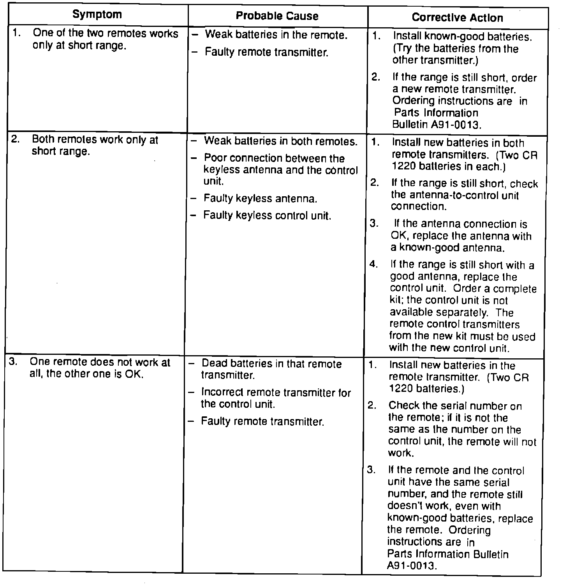
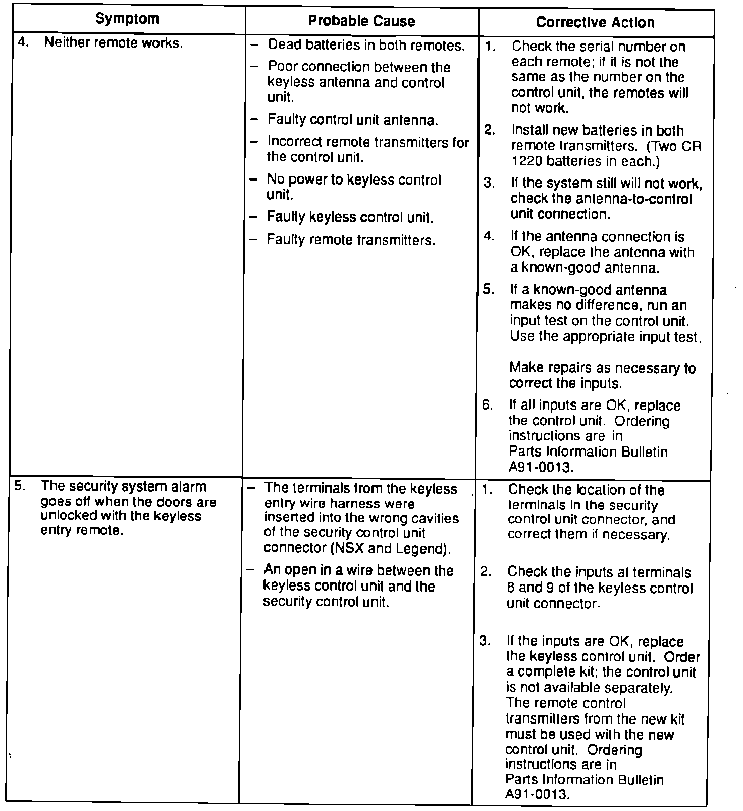
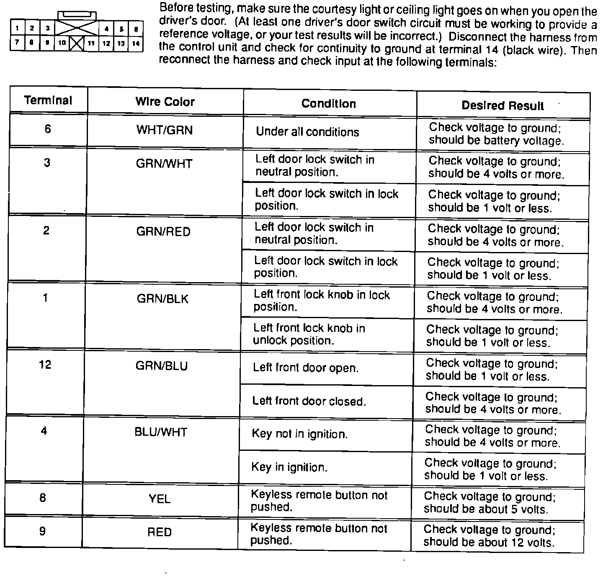
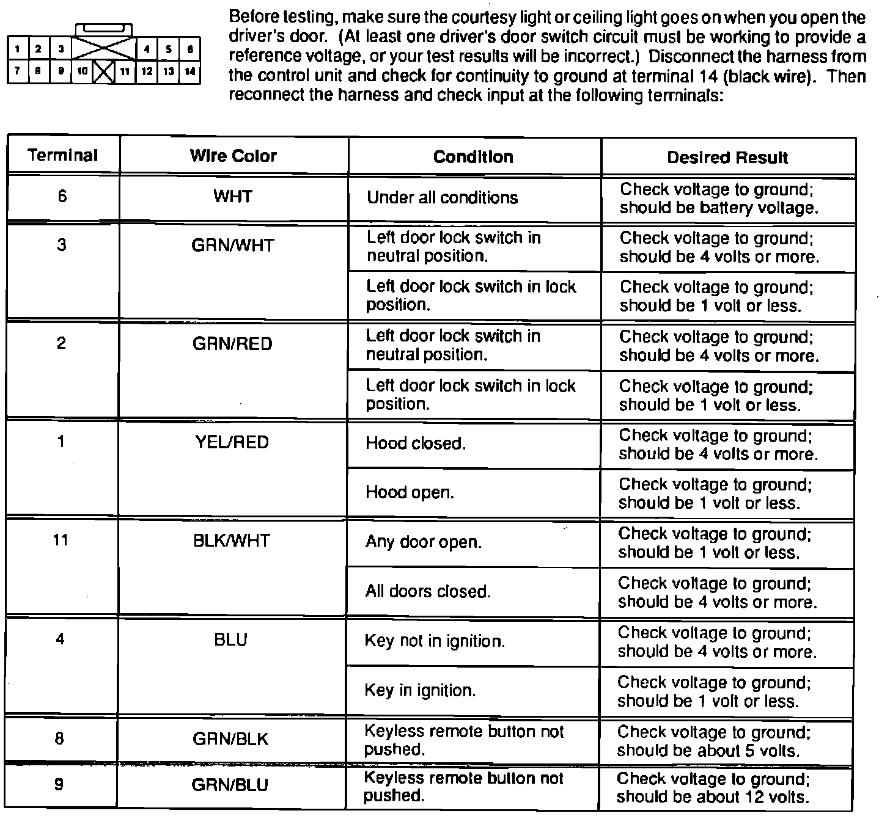
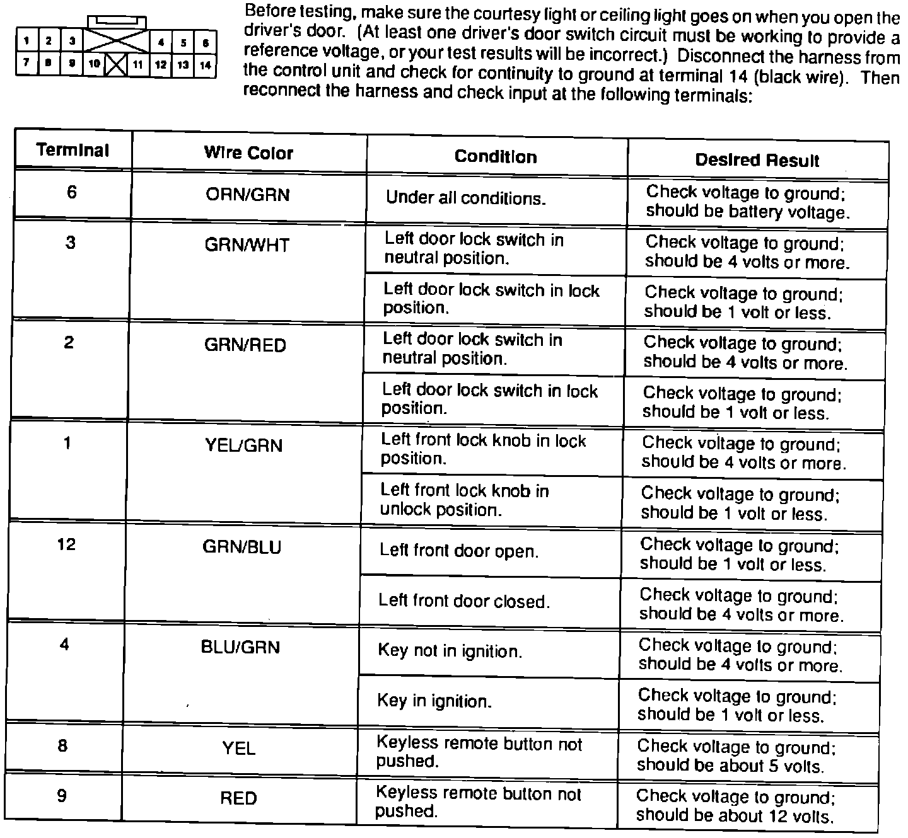

Keyless Entry System - Troubleshooting
November 25, 1991BULLETIN NO.
91-052
YEAR
'91 - 92
'91 - 92
1992
MODEL
NSX
LEGEND
VIGOR
VIN APPLICATION
ALL with keyless entry


Troubleshooting for Optional Keyless Entry System

Input Test for '91-92 Legend Keyless Entry Control Unit

Input Test for '92 Vigor Keyless Entry Control Unit

Input Test for '91-92 NSX Keyless Entry Control Unit